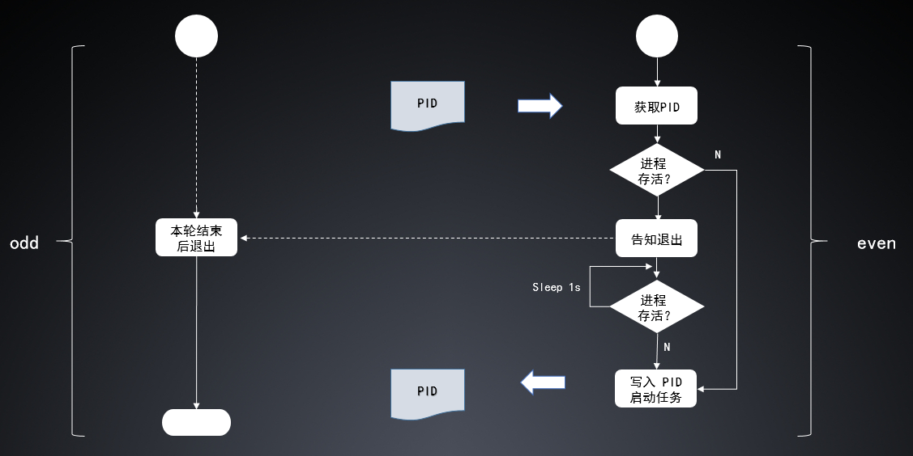

前言
此部分为设计背景，可不看
从16年8月至今我一直都在开发 XiaoMi 内部通用 BI 系统的 ETL 模块，第一个版本在10月初上线，目前还在不断的迭代开发中。整个 ETL 模块大致分成三个部分：
- 前端部分：记录 ETL 的配置信息，包括数据源，脚本，执行时参数等
- 多进程调度部分：包括触发器和调度器等，触发器筛选可被执行的作业并封装成任务，调度器读取任务执行
- ETL 执行模块：拿到任务之后根据相应参数实例化对应的数据抓取模块 E 和存储模块 L，并处理两个模块之间的数据格式转化 T
其中多进程调度模块主要由以下五个子模块组成：
- Trigger：触发器，筛选作业封装任务，对于实时任务直接开启子进程启动 ETL 模块
- Processor：调度器，接收任务（历史任务）指令，开启子进程启动 ETL 模块
- Scavenger：清道夫，清除无用数据
- Sentry：哨兵，接收指令杀死对应进程
- Inspector：质检员，定期抽检数据准确性
这些子模块都需要进程常驻，所以需要一种合适的守护模型的设计方案。
设计目的
设计一种守护模型的方案，保证进程常驻，同时避免单一进程长时间存活带来的一些问题（如 Yii 框架的配置信息无法及时更新）
设计方案
一种多个计划任务交替获得执行权的守护模型
简单的流程图

- 流程图中有两个计划任务，odd 和 even，假设 odd 已经在执行，even 需要获得执行权
- PID 文件存储了当前正在执行的进程 ID ，对此文件的写入操作需要加文件锁
- odd 进程首先从 PID 文件中获取当前正在执行的 PID ，检查其是否存活，如果不存活则直接写入 PID，并启动任务，否则下一步
- 通知读取到的 PID 退出，间隔 1s 循环检查是否已经退出，如果已经退出则写入新的 PID 并启动任务。
- 采用平滑退出机制，odd 进程收到退出信号后会在当前正在执行的任务结束后退出。
源码及分析
ETLCronCommand 类
1
2
3
4
5
6
7
8
9
10
11
12
13
14
15
16
17
18
19
20
21
22
23
24
25
26
27
28
29
30
31
32
33
34
35
36
37
38
39
40
41
42
43
44
45
46
47
48
49
50
51
52
53
54
55
56
57
58
59
60
61
62
63
64
65
66
67
68
69
70
71
72
73
74
75
76
77
78
79
80
81
82
83
84
85
86
87
88
89
90
91
92
93
94
95
96
97
98
99
100
101
102
103
104
105
106
|
class ETLCronCommand
{
private function start($pidFile, $schedule)
{
$shouldRun = true;
pcntl_signal(SIGHUP, function ($signo) use (&$shouldRun) {
$shouldRun = false;
});
if ($this->writePID($pidFile)) {
while ($shouldRun) {
pcntl_signal_dispatch();
$schedule->run();
sleep(1);
}
ULog::stdout("Schedule has exited.");
}
}
public function restart($pidFile, $schedule)
{
$this->stop($pidFile);
while ($this->isAlive($pidFile)) {
sleep(1);
}
$this->start($pidFile, $schedule);
}
private function writePID($pidFile)
{
if ($this->isAlive($pidFile)) {
return false;
}
$fp = fopen($pidFile, 'w+');
if (flock($fp, LOCK_EX | LOCK_NB)) {
fwrite($fp, posix_getpid());
fflush($fp);
flock($fp, LOCK_UN);
} else {
ULog::stdout("Some other Daemon is running, return for it.");
return false;
}
fclose($fp);
ULog::stdout("The Schedule is dead, starting a new one.");
return true;
}
private function isAlive($pidFile)
{
if (file_exists($pidFile)) {
$pid = file_get_contents($pidFile);
if (!empty($pid) && file_exists("/proc/$pid")) {
ULog::stdout("The Schedule is still alive, sleep.");
return true;
}
}
return false;
}
public function stop($pidFile)
{
if (file_exists($pidFile)) {
$filePid = file_get_contents($pidFile);
if (file_exists("/proc/$filePid")) {
posix_kill($filePid, SIGHUP);
ULog::stdout("Send stop signal successfully.");
return;
}
}
ULog::stdout("The Schedule is not alive.");
}
}
|
命令行函数（以 Sentry 为例）
1
2
3
4
5
6
7
8
9
10
11
12
13
14
15
16
17
18
19
20
21
22
23
24
25
|
class EtlController extends CommandController
{
public function actionRestartSentry($pidFile = '/tmp/sentry.pid')
{
(new ETLCronCommand())->restart($pidFile, new ETLSentry());
}
public function actionStopSentry($pidFile = '/tmp/sentry.pid')
{
(new ETLCronCommand())->stop($pidFile);
}
}
|
备注
- 所有待守护的子模块需要实现 ETLSchedule 接口，该接口只有一个 run 函数。
- 计划任务的配置参数：
- odd: 1-59/2 * * * * 每奇数分钟启动
- even: */2 * * * * 每偶数分钟启动
后记
暂时没想到